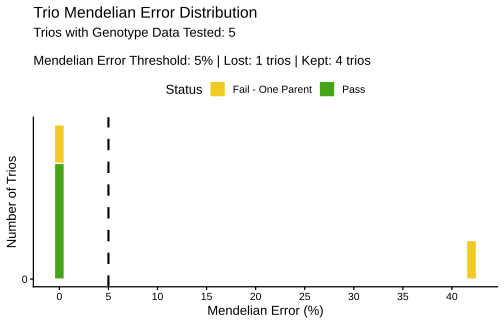
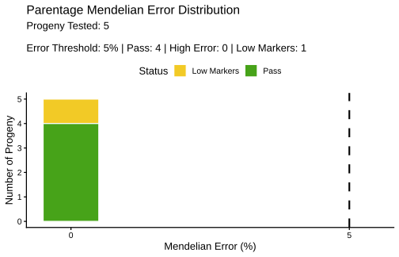

Validate pedigrees and assign parentage with BIGpopA
BIGpopA, pedigree cleaning, pedigree validation, parentage assignment, Mendelian error, SNP genotype, R
This page is adapted from Josue Chinchilla-Vargas’s BIGpopA Tutorial: Pedigree cleaning, validation, and parentage assignment from SNP genotype data. The dataset, analysis sequence, function calls, and interpretations follow the supplied R Markdown and rendered HTML. Expected results were checked on July 16, 2026 with BIGpopA 1.0.5 from the official main branch at commit e98416e.
What you will learn
This tutorial demonstrates a typical pedigree workflow using BIGpopA, the analytical engine behind Familia. You will run three functions in sequence:
check_ped()to detect and correct structural pedigree errors;validate_pedigree()to test recorded parent-offspring trios against SNP genotypes; andfind_parentage()to search a supplied candidate-parent pool.
Before starting, read Pedigree validation or parentage assignment? for the distinction between the two genotype-based tasks.
What you need
- R 4.4.0 or newer;
- permission to install R packages; and
- an internet connection for installation from GitHub.
Code execution is disabled during normal site builds. The displayed results come from running Josue’s complete example with R 4.5.1 and BIGpopA 1.0.5.
1. Install BIGpopA
The official BIGpopA repository currently describes the package as under development and provides a GitHub installation:
install.packages("remotes")
remotes::install_github(
"Breeding-Insight/BIGpopA",
dependencies = TRUE
)
library(BIGpopA)
packageVersion("BIGpopA")The verified version for this page is:
[1] '1.0.5'Report package problems through the BIGpopA issue tracker.
2. Create the example inputs
The example builds four objects directly in R:
| Object | Required content in this example |
|---|---|
genotypes |
One id column followed by SNP genotypes coded 0, 1, or 2; NA represents missing data |
pedigree |
id, male_parent, and female_parent columns |
parents |
Candidate-parent id and sex coded M or F |
progeny |
IDs whose parentage will be searched |
Run the supplied example code:
library(BIGpopA)
# SNP genotypes coded 0/1/2 (NA = missing); C_low is mostly missing
genotypes = data.frame(
id = c("M1","F1","M2","F2","C1","C2","C3","C_bad","C_low"),
snp01 = c( 0, 0, 2, 2, 0, 2, 1, 0, NA),
snp02 = c( 0, 0, 2, 0, 0, 1, 0, 0, NA),
snp03 = c( 0, 2, 0, 2, 1, 1, 1, 1, NA),
snp04 = c( 0, 2, 0, 0, 1, 0, 0, 1, NA),
snp05 = c( 2, 0, 1, 1, 1, 1, 1, 1, NA),
snp06 = c( 2, 0, 1, 0, 1, 1, 1, 1, NA),
snp07 = c( 2, 2, 0, 1, 2, 0, 2, 2, NA),
snp08 = c( 2, 2, 2, 2, 2, 2, 2, 2, NA),
snp09 = c( 0, 1, 0, 2, 1, 1, 1, 1, 0),
snp10 = c( 0, 1, 2, 0, 0, 1, 0, 0, 0),
snp11 = c( 2, 1, 1, 2, 1, 2, 2, 1, 2),
snp12 = c( 2, 1, 0, 1, 2, 1, 1, 2, 2),
stringsAsFactors = FALSE
)
# Pedigree with founders coded 0, a misassigned trio (C_bad),
# and a duplicated row (C_missing)
pedigree = data.frame(
id = c(
"M1","F1","M2","F2","C1","C2","C3",
"C_bad","C_low","C_missing","C_missing"
),
male_parent = c(
"0","0","0","0","M1","M2","M1",
"M2","M1","M1","M1"
),
female_parent = c(
"0","0","0","0","F1","F2","F2",
"F1","F1","F1","F1"
),
stringsAsFactors = FALSE
)
# Candidate parents with sex and progeny to assign
parents = data.frame(
id = c("M1","M2","F1","F2"),
sex = c("M", "M", "F", "F"),
stringsAsFactors = FALSE
)
progeny = data.frame(
id = c("C1","C2","C3","C_bad","C_low","C_missing"),
stringsAsFactors = FALSE
)
pedigree
genotypesThe pedigree contains four founders, several crosses, a deliberately duplicated C_missing row, a misassigned C_bad trio, and a C_low sample with only four non-missing markers.
3. Clean the pedigree structure
check_ped() checks the columns id, male_parent, and female_parent. According to the BIGpopA documentation, exact duplicates and missing parent records are corrected automatically. Conflicting trios and inconsistent parent-sex roles are corrected by default. Cycles are reported for manual resolution.
clean_ped_results = check_ped(
pedigree,
verbose = FALSE
)
clean_ped = clean_ped_results$corrected_pedigree
clean_pedThe repeated C_missing row is removed, leaving ten pedigree records:
id |
male_parent |
female_parent |
|---|---|---|
| M1 | 0 | 0 |
| F1 | 0 | 0 |
| M2 | 0 | 0 |
| F2 | 0 | 0 |
| C1 | M1 | F1 |
| C2 | M2 | F2 |
| C3 | M1 | F2 |
| C_bad | M2 | F1 |
| C_low | M1 | F1 |
| C_missing | M1 | F1 |
Inspect individual issue tables when you need the records behind a correction:
clean_ped_results$exact_duplicates
clean_ped_results$conflicting_trios
clean_ped_results$inconsistent_sex_roles
clean_ped_results$missing_parents
clean_ped_results$dependencies4. Validate the recorded parents
validate_pedigree() compares each recorded trio with the genotype matrix and calculates a Mendelian-error percentage.
ped_validate_results = validate_pedigree(
clean_ped,
genotypes,
verbose = FALSE,
plot_results = TRUE
)
ped_validate_report = ped_validate_results$full_results
ped_validate_report
The verified result is:
id |
Error (%) | Markers tested | status |
recommended_correction |
|---|---|---|---|---|
| M1 | NA |
0 | missing_both_parents |
none |
| F1 | NA |
0 | missing_both_parents |
none |
| M2 | NA |
0 | missing_both_parents |
none |
| F2 | NA |
0 | missing_both_parents |
none |
| C1 | 0.00 | 12 | pass |
none |
| C2 | 0.00 | 12 | pass |
none |
| C3 | 0.00 | 12 | pass |
none |
| C_bad | 41.67 | 12 | fail |
remove_male_parent |
| C_low | 0.00 | 4 | low_markers |
low_markers_remove_female_parent |
| C_missing | NA |
0 | no_genotype_data |
none |
The four founders appear as missing_both_parents in this run because no founders_file was supplied. For C_bad, the recorded male parent has an 83.33 percent homozygous-mismatch rate and the recorded female parent has zero percent, leading to remove_male_parent. C_low is not evaluated as a passing trio because only four markers are available.
The settings used above are the BIGpopA 1.0.5 defaults:
| Argument | Default | Function meaning |
|---|---|---|
trio_error_threshold |
5.0 | Maximum Mendelian-error percentage classified as pass |
min_markers |
10 | Minimum non-missing markers required to evaluate a trio |
single_parent_error_threshold |
2.0 | Maximum homozygous-marker mismatch percentage for a parent to be considered acceptable |
These values document how BIGpopA 1.0.5 classified this supplied example. They are exposed as adjustable function arguments in the official package documentation.
5. Assign parents from the candidate pool
When parentage is unknown, find_parentage() searches the supplied candidate parents. Josue’s example uses method = "best_pair".
find_parentage_results = find_parentage(
genotypes,
parents,
progeny,
method = "best_pair",
verbose = FALSE,
plot_results = TRUE
)
find_parentage_report = find_parentage_results$full_results
find_parentage_report
BIGpopA warns that C_missing is not in the genotype data and removes it from the parentage search:
The following progeny IDs were not in the genotype file and will not be analyzed: C_missingThe verified report contains:
id |
male_parent |
female_parent |
Error (%) | Markers tested | status |
|---|---|---|---|---|---|
| C1 | M1 | F1 | 0.00 | 12 | pass |
| C2 | M2 | F2 | 0.00 | 12 | pass |
| C3 | M1 | F2 | 0.00 | 12 | pass |
| C_bad | M1 | F1 | 0.00 | 12 | pass |
| C_low | M1 | F1 | 0.00 | 4 | low_markers |
C_bad failed validation against its recorded pair of M2 and F1. In the candidate-parent search, the example recovers M1 and F1 with zero percent Mendelian error. C_low has the same best pair but remains low_markers.
The package documents four search methods:
method |
Search performed |
|---|---|
"best_pair" |
Best male and female parent pair |
"best_male_parent" |
Best male parent |
"best_female_parent" |
Best female parent |
"best_match" |
Best parent without using a parent-sex role |
Other documented controls include error_threshold, min_markers, show_ties, allow_parent_selfing, and exclude_self_match. Their defaults describe package behavior and should not be treated as dataset-independent recommendations.
6. Put the three steps together
The complete sequence from Josue’s tutorial is:
clean_ped = check_ped(pedigree)$corrected_pedigree
validated = validate_pedigree(
clean_ped,
genotypes
)$full_results
assigned = find_parentage(
genotypes,
parents,
progeny,
method = "best_pair"
)$full_resultsPedigree validation and parentage assignment answer different questions. The companion concept page explains how to read their outputs.
7. Record the software session
Record the versions used for an analysis:
sessionInfo()This page was verified with:
R version 4.5.1
BIGpopA_1.0.58. Cite BIGpopA
Run the package citation command for the current reference:
citation("BIGpopA")For version 1.0.5, the installed package returns:
Chinchilla-Vargas J, Sandercock A, University of Florida. 2026. BIGpopA: Pedigree Validation Genetic Composition of Diploids & Polyploids. R package version 1.0.5. https://github.com/Breeding-Insight/BIGpopA.
Acknowledgments
Developed as part of Breeding Insight, an initiative providing open-source, data-driven tools for modern breeding programs.
Continue learning
Review validation and assignment Choose a genomic analysis path
Sources
- Chinchilla-Vargas J. 2026. BIGpopA Tutorial: Pedigree cleaning, validation, and parentage assignment from SNP genotype data. Source R Markdown, R script, and rendered HTML supplied for adaptation to Software Hub.
- BIGpopA 1.0.5 source and function documentation